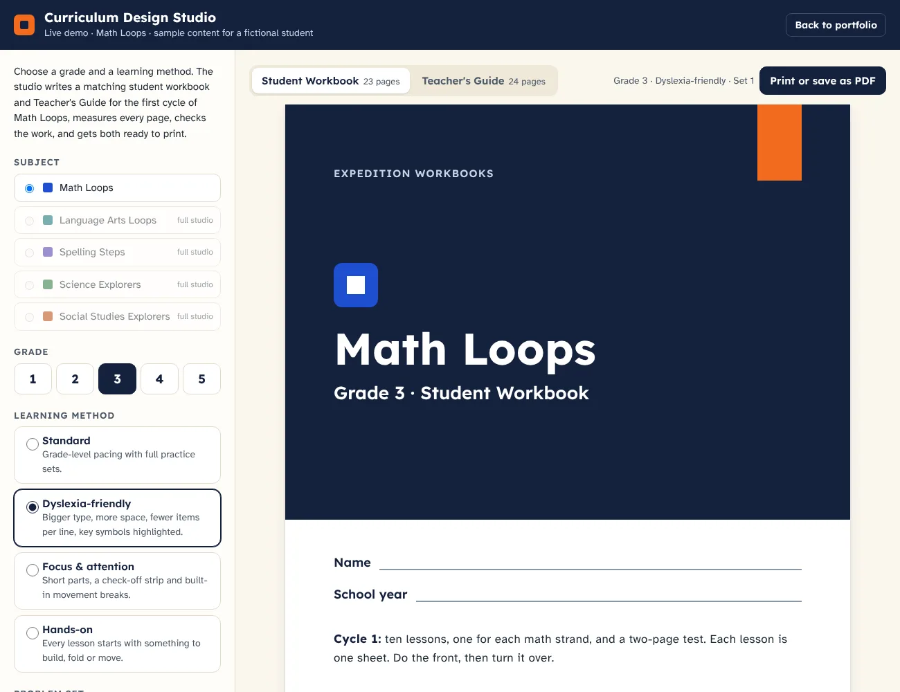
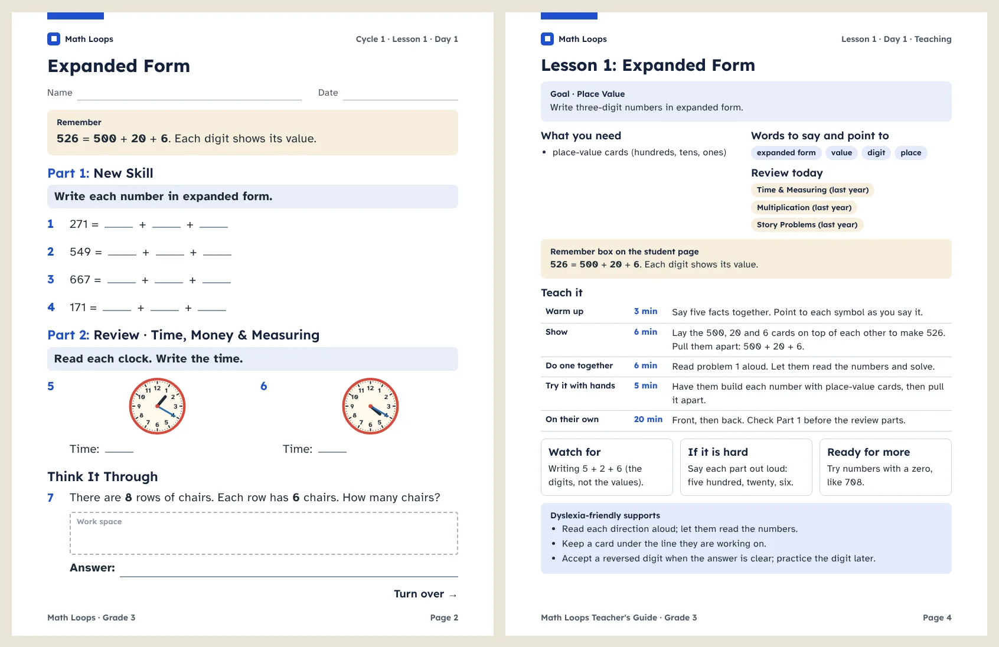

AI-06In use
Curriculum Design Studio
The system behind a family homeschool's printed curriculum: seven subject workbooks a year, built on spiral review and dyslexia-friendly page rules and checked against state home instruction requirements. This live demo covers one subject, Math Loops. Pick a grade and a learning method, and it writes the first cycle of the year as two linked documents: a student workbook with no answers in it, and a Teacher's Guide with a teaching plan and a full answer key for every lesson. Both come from the same data, so the key always matches the pages, and both print as letter-size PDFs.
- Domain
- Curriculum design, accessible print documents
- Data protection
- Runs in the browser; no student data is collected or sent anywhere
- Delivered as
- Single-file web app with print-ready PDF output; the full studio is a Claude Project with skills and a Python page generator
What testing caught: the first build packed the front of each lesson so tightly that the layout step dropped whole review parts to make pages fit, and some strands came back once in a cycle instead of three times. The in-page check flagged it on all 20 grade and method builds. Review is now scheduled so every strand returns exactly three times, always including yesterday's, and the layout step may trim a row but never a review part.


What it does
- Builds one cycle of Math Loops for grades 1 to 5: ten lessons, one for each math strand, and a two-page test
- Each lesson is one sheet: a Remember box and the new skill on the front, review, a Think It Through problem, and quick facts on the back
- Schedules spiral review so every strand returns three times a cycle, using last year's level for strands not taught yet this year
- Four learning methods change the pages, not just the label: Standard, Dyslexia-friendly (larger type, more spacing, fewer items per line, highlighted symbols), Focus and attention (short parts, a check-off strip, movement breaks), and Hands-on (a build-it-first activity on every lesson)
- Draws question pictures in full color: clocks, fraction shapes, base-ten blocks, arrays, graphs, tally charts, and a coordinate grid
- Writes a Teacher's Guide with a how-to page, a cycle-at-a-glance table, a teaching plan with timed steps for the chosen method, and an answer page for every lesson and the test
- Every problem set is seeded, so the same grade, method, and set number always rebuild the same pages
Safeguards
- The student workbook is checked to contain no answers; every answer lives in the Teacher's Guide
- No problem repeats anywhere in a lesson, front or back, or within the test
- Every page is measured in the browser after layout; content that does not fit is trimmed a row at a time and put back if room frees up, so nothing runs into the footer
- Pages with space left get a work area, not a blank band
- Directions are checked to be one line, 12 words or fewer, and to start with a verb
- The checks run on every build and show on screen next to the documents
- The public demo uses no student names; it is sample content for a fictional student
How it was verified
- All 60 combinations of grade, learning method, and problem set were loaded in headless Chrome with the real brand fonts, and every one passed every check: no overflow, no repeats, three reviews per strand, and a complete answer key
- Both documents were printed to PDF and page-counted: 23 letter pages for the workbook and 24 for the Teacher's Guide
- Contact sheets of fronts, backs, tests, and guide pages were reviewed by eye for crowding, empty space, and readable picture labels
- Answer keys were spot-checked against the printed problems, including remainders, equivalent fractions, and decimal place value
Try the live demo
Pick a grade and a learning method, switch between the two documents, and print or save either one as a PDF. Runs in your browser; nothing is sent anywhere. Opens in a new tab.